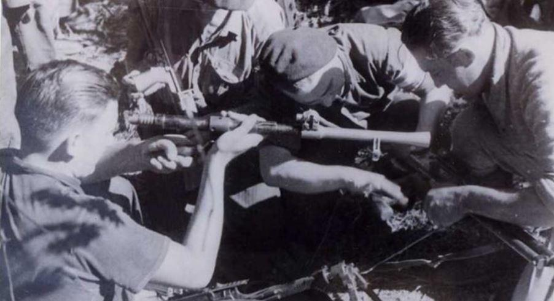
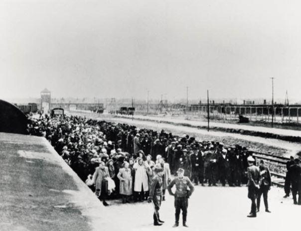
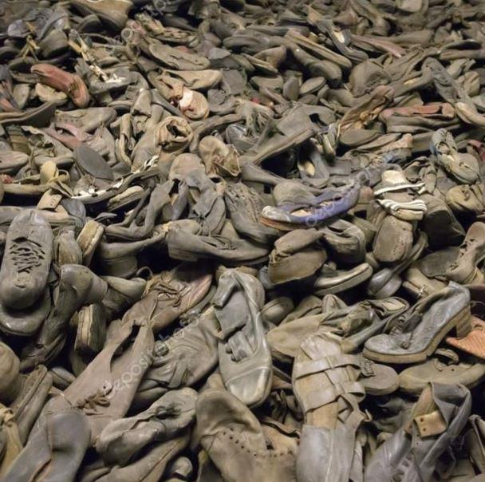
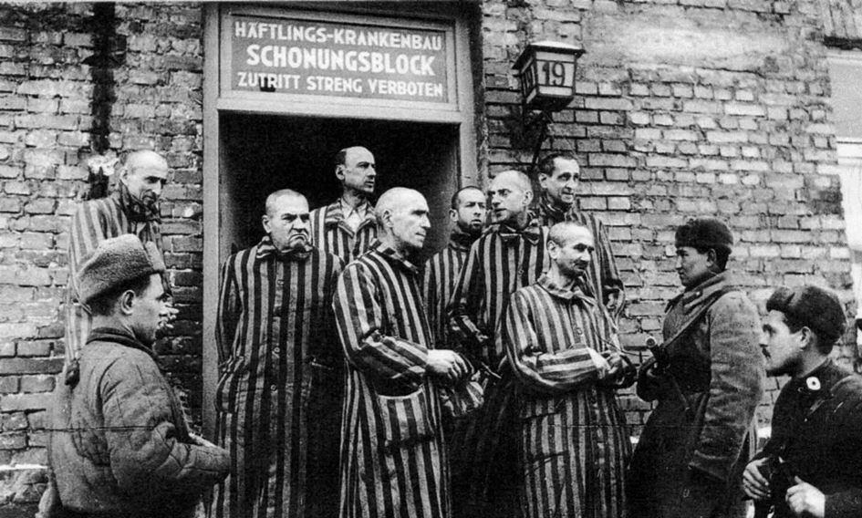
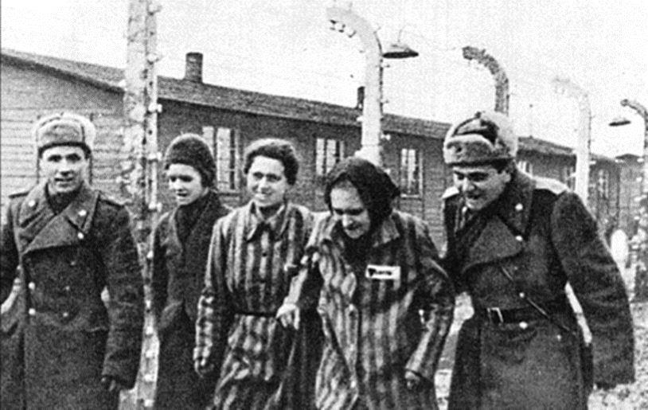
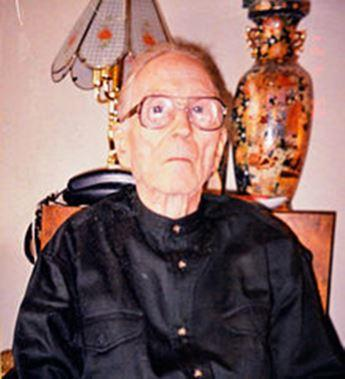
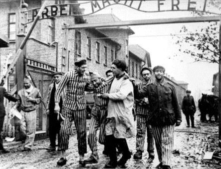
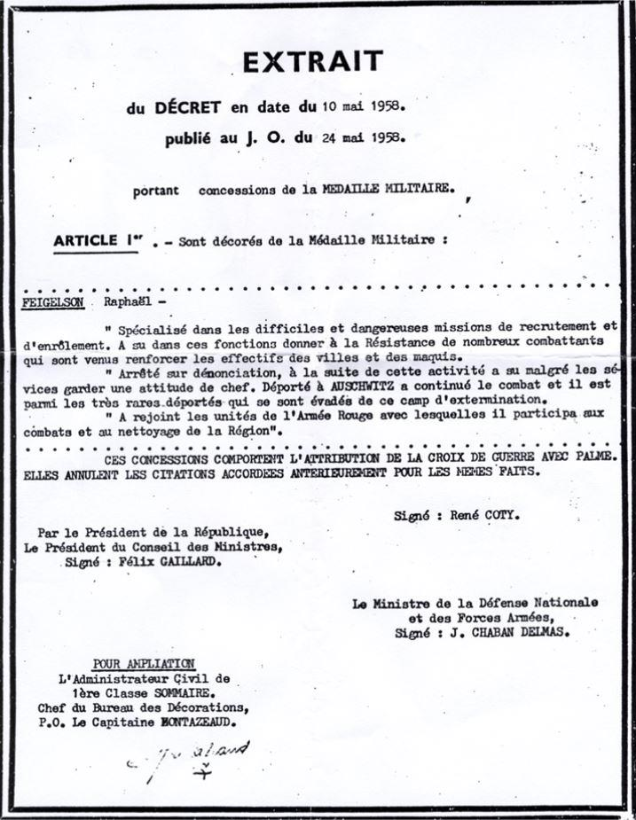

Photo prise à Toulouse en mai 1944 avant son arrestation par la MiliceRésistant, Raphaël Feigelson été arrêté à Toulouse, puis déporté à Auschwitz. S’étant évadé, il va permettre la libération du camp.
En 1939, il n’a que 13 ans au moment où la France entre dans la Deuxième Guerre mondiale. Raphaël Feigelson n’avait pas attendu l’appel du général de Gaulle, le 18 juin 1940, pour résister. « D’ailleurs, dit-il, je ne l’ai pas entendu. On m’en a parlé bien après. » Dès l’entrée des Allemands dans Paris, le soir, il recopie à la main des tracts hostiles à l’occupant que rédige son père, Pinkos, un Juif lituanien originaire de Vilnius qui tient un magasin de machines à coudre, à Paris dans le Ve arrondissement. Les tracts sont intitulés « La lettre de M. Paul », que le gosse distribue ensuite dans les boîtes aux lettres de son quartier. Ces tracts marquent l’entrée de la famille Feigelson dans la résistance.
Le père de Raphaël met alors en place un petit groupe, David (direction de l’armée des volontaires israélites de défense), destiné à aider les Juifs, dont les mesures antisémites rendent la vie intenable. Raphaël et sa mère, Luba, quasiment aveugle, sont ses agents de liaison. Parallèlement, le gamin « bricole » au sein du Yasc (Yiddish Athlétic Sporting Club), une association du Xe arrondissement.
« Le 11 novembre 1940, j’étais sur les Champs-Élysées », raconte Raphaël Feigelson. « C’était la première manifestation de masse contre l’occupant. Cela a eu un impact international considérable ». À Paris, dans le Ve arrondissement, le magasin de machines à coudre familial cache un émetteur clandestin.
En 1942, Pinkos Feigelson est arrêté par les Allemands et condamné à trois ans de prison. Libéré par erreur au bout de trois mois, celui-ci revient à Paris et se cache. Mais Raphaël est également surveillé et, un policier du commissariat de la rue Geoffroy-Saint-Hilaire lui indique avoir l’ordre de le surveiller et lui conseille de se mettre au vert.
Ce sera d’abord Lyon, puis Toulouse où, pensionnaire d’un lycée de la rue des Récollets, il reprend ses activités de Résistance. « Une fois là-bas, j’ai commencé par éditer un journal : l’Ami du peuple », se souvient Raphaël Feigelson. « Le réseau FTP, (Francs-tireurs et partisans), est entré en contact avec moi ».
Grâce à cela, il se rapproche des mouvements locaux de la Résistance, et, sous plusieurs identités, capitaine Sicot, d’Artagnan…, accentue ses actions clandestines. Ayant contribué à l’unification de la résistance des jeunes, on lui confie le commandement militaire régional des Forces unies de la jeunesse patriotique avec charge de former ceux qui, en 1944, deviendront les unités de jeunes des FFI.
Il prend beaucoup de risques, frôle plusieurs fois l’arrestation. « J’étais audacieux, gonflé, mais prudent ». Hélas, tous ses contacts n’avaient pas la même prudence.
En mai 1944, l’un de ses compagnons est arrêté par la milice. Raphaël Feigelson est appréhendé à son tour, le 14 mai 1944, près du pont Saint-Pierre. Il ne peut éviter un piège de miliciens. « Ils m’ont foutu à poil, torturé à la gégène. Miracle, le choc électrique m’a rendu amnésique, ce qui m’a empêché de parler sous la douleur. » Ses bourreaux, eux continuent. « ls m’ont tabassé, écrasé les doigts avec des pinces, ils ont même essayé de me passer des journaux en feu sur la plante des pieds. Ces cons avaient peur de se brûler les mains. » Alors, ils le confient à la Gestapo, qui lui applique de nouvelles tortures. Deuxième miracle qui lui évite de succomber aux coups, une erreur d’aiguillage bureaucratique l’envoie au camp d’internement de Compiègne, d’où, le 2 juillet 1944, il doit être embarqué pour Mauthausen. Au moment du départ, alors que la Gestapo toulousaine, ayant réalisé sa bévue, le réclame pour poursuivre les interrogatoires, Aloïs Brunner, adjoint d’Adolf Eichmann en France, qui effectue une visite à Compiègne, ordonne de le diriger, ainsi que d’autres résistants juifs, sur Auschwitz. Parti de Drancy le 31 juillet 1944, son convoi, le 77, arrivera à Auschwitz le 3 août.
Juif et résistant, « Raph » ne se fait guère d’illusions sur son sort :
« Au départ du convoi, nous étions 1 300. Mais seulement 300 sont entrés dans ce camp d’extermination, les autres furent gazés et brûlés le jour même. »
« Himmler, rappelle-t-il, avait voulu faire d’Auschwitz la plus redoutable machine d’extermination au service de la solution finale. »
Il raconte son arrivée : « A notre descente du convoi, le 3 août 1944, on nous a aussitôt mis en condition. Les crocs des chiens, les coups de matraques, les ordres hurlés, les familles séparées. Et ce SS qui arrache un bébé des bras de sa mère et qui lui fracasse le crâne contre un wagon ou cette brute qui lance un autre nouveau-né en l’air et lui tire dessus. Nous étions en enfer. On ne pourrait en sortir que par une cheminée. »
Raphaël Feigelson est affecté à un commando qui trace des routes, à un autre qui pose des canalisations, à un troisième qui déterre les bombes n’ayant pas explosé, à un commando disciplinaire d’où l’organisation clandestine de résistance parvient à le faire muter à la « vieille-désinfection », un commando contrôlé par ses amis chargés de désinfecter les vêtements des nouveaux arrivants. « Dans notre block, nous planquions des armes en prévision d’une évasion collective. Elle n’a jamais eu lieu. Le 7 octobre, les SS ayant investi le « Sonder Kommando », celui des chambres à gaz. »
Lorsque les SS commencent à évacuer Auschwitz, entraînant les survivants dans d’épouvantables marches de la mort, les résistants reçoivent l’ordre de se cacher et d’attendre l’arrivée des partisans polonais. « Ils ne sont jamais venus. En revanche, c’est un commando spécial SS qui s’est pointé. Sa mission : détruire toute trace des horreurs commises par les nazis et transformer le site en un banal champ labouré. » Pour Raphaël Feigelson et ses camarades, il faut à tout prix les en empêcher. « Le 21 janvier, nous avons découpé une ouverture dans les barbelés qui n’étaient plus électrifiés. On a pris des draps blancs, des vêtements chauds, des armes, et on est parti en direction du front. On a marché, marché. C’était la confusion la plus totale. Nous étions au beau milieu des combats. Obus allemands, orgues de Staline soviétiques, ça tombait de tous les côtés. »
PRIS POUR DES ESPIONS NAZIS
Enfin, ils rencontrent une unité soviétique de la 97e division de la 60e armée du 1er front d’Ukraine. Ceux-ci les prennent pour des espions. « Ils ont immédiatement voulu nous fusiller. J’ai interpellé leur officier : « Ya Franzouski Partizan. » Remarquant que je parlais à mes copains en yiddish, il m’a demandé : « Du bist yid ? » (tu es juif ?). Lui aussi était juif. Je ne pouvais donc pas être un nazi et encore moins un espion. Je lui ai raconté Auschwitz, les chambres à gaz, les fours crématoires. Il était impensable de laisser les SS raser les installations. Il fallait que le monde sache ce qui s’était déroulé là : le plus grand massacre de toute l’histoire de l’humanité. »
Auschwitz ne figure pas sur le plan d’offensive de l’officier de l’armée rouge. Convaincu par Raphaël Feigelson, il modifie son ordre de route et atteint Auschwitz le 27 janvier. « Il restait environ trois mille déportés dans le camp, malades, trop faibles pour bouger. Surpris par l’arrivée des Soviétiques, les Allemands n’ont eu le temps ni de les éliminer, ni de détruire les preuves de leur entreprise d’extermination. »
Il poursuit : « Le 27 janvier 1945, jour où je suis revenu à Auschwitz avec les soldats soviétiques, était un samedi. Dieu m’a fait porter les armes le jour de shabbat, ce qui est interdit, afin d’empêcher que ne soient détruites les preuves de ces atrocités et que l’on sauve les quelques rescapés qui restaient. »
Lorsque les soldats soviétiques arrivèrent sur Auschwitz ils s'attendaient à investir un grand camp de prisonniers et à être accueillis comme des libérateurs. Ce qu'ils ont découvert a bouleversé leurs sensibilités pourtant déjà bien aguerries. Peu parmi les 8000 survivants ont pu parler ou simplement bouger et encore moins accueillir les Soviétiques. En fait ils étaient même terrifiés à l'idée de voir arriver de nouveaux bourreaux.
Le colonel Anatoly Shapiro se souvient : « J'avais déjà vu beaucoup d'innocents tués. J'avais vu des gens pendus. J'avais vu des gens brûlés. Mais je n'étais pas encore préparé à Auschwitz ».
Shapiro se souvient aussi des premiers indices probants des assassinats de masse « Nous avons découvert des montagnes de dents artificielles, de lunettes et de cheveux humains ».
Dans la caserne des enfants, il y avait seulement deux survivants, le reste gazés ou morts comme des sujets d'expériences médicales horribles.
Un autre officier soviétique a rappelé que lorsque les équipes de nettoyage sont allées inspecter les cheminées des crématoires, ils ont trouvé des dépôts de graisse humaine sur les murs 45in (115 cm) d'épaisseur.
Ce que l'Armée rouge avait découvert à Auschwitz ce n'était pas un camp, mais un complexe de camps occupant une superficie de 20 km2.
Beaucoup de soldats soviétiques furent étonnés par ces dimensions qui attestent de l'ampleur de l'extermination de masse et du fait qu'Auschwitz était à l'origine un site industriel de travail d'esclaves géré par les SS.
Après la libération d’Auschwitz, Raphaël Feigelson participera avec les Soviétiques au « nettoyage » de la région. Puis, en uniforme de l’armée rouge, prendra à Odessa un bateau anglais pour Marseille et retrouvera ses parents à Paris en avril.
Puis viennent les honneurs. Médaille de la Résistance, médaille des Évadés, médaille Militaire, Croix de guerre avec palme. Il sera fait chevalier de la Légion d’Honneur en 1975 par Valéry Giscard d’Estaing.

F.M.
Qu’il nous soit permis de remercier notre confrère de France Soir, Alain Vincenot qui nous a fait découvrir, à travers un très bel article écrit en 2010, ce héros de la Résistance.

Partager cette page